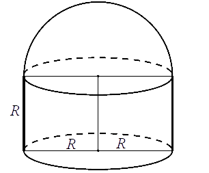

Kula
Kula powstaje przez obrót dowolnego koła wokół jego
średnicy.
Powierzchnię kuli nazywamy sferą. Wzór na pole kuli: \[P=4\pi r^2\] Wzór na objętość kuli: \[V=\frac{4}{3}\pi r^3\]
Wzór na pole kuli: \[P=4\pi r^2\] Wzór na objętość kuli: \[V=\frac{4}{3}\pi r^3\]
Powierzchnię kuli nazywamy sferą.
Wzór na pole kuli: \[P=4\pi r^2\] Wzór na objętość kuli: \[V=\frac{4}{3}\pi r^3\]
Kula ma objętość \(V = 288\pi\). Promień \(r\) tej kuli jest równy
A.\( 6 \)
B.\( 8 \)
C.\( 9 \)
D.\( 12 \)
A
Objętość kuli o promieniu \( \;r=\pi\;\text{dm}\; \) jest równa
A.\(\frac{4}{3}\pi\;\text{dm}^3 \)
B.\(\frac{4}{3}\pi^4\;\text{dm}^3 \)
C.\(\frac{3}{4}\pi^4\;\text{dm}^3 \)
D.\(\frac{3}{4}\pi^3\;\text{dm}^3 \)
B
Kula o promieniu \(5\) cm i stożek o promieniu podstawy \(10\) cm mają równe
objętości. Wysokość stożka jest równa
A.\( \frac{25}{\pi } \) cm
B.\( 10 \) cm
C.\( \frac{10}{\pi } \) cm
D.\( 5 \) cm
D
Przedstawiona na rysunku bryła składa się z walca i półkuli. Wysokość walca jest
taka, jak promień jego podstawy i jest równa \(R\).  Objętość tej bryły jest równa
A.\( \pi R^3 \)
B.\( \frac{5}{3}\pi R^3 \)
C.\( \frac{2}{3}\pi R^3 \)
D.\( 2\pi R^3 \)
B
Stożek o promieniu podstawy \(r\) i kula o tym samym promieniu mają równe
objętości. Tangens kąta między tworzącą i płaszczyzną podstawy tego stożka jest równy
A.\( \frac{4}{3} \)
B.\( 12 \)
C.\( \sqrt{17} \)
D.\( 4 \)
D
Kula o promieniu \(6\) cm i walec o wysokości równej \(4{,}5\) cm mają równe
objętości. Średnica podstawy walca ma długość:
A.\( 8 \) cm
B.\( 8\sqrt{2} \) cm
C.\( 16 \) cm
D.\( 20 \) cm
C
Promień kuli i promień podstawy stożka są równe \(4\). Pole powierzchni kuli jest
równe polu powierzchni całkowitej stożka. Długość tworzącej stożka jest równa
A.\( 8 \)
B.\( 4 \)
C.\( 16 \)
D.\( 12 \)
D
Pole powierzchni całkowitej pewnego stożka jest \(3\) razy większe od pola
powierzchni pewnej kuli. Promień tej kuli jest równy \(2\) i jest taki sam jak promień podstawy tego
stożka. Tworząca tego stożka ma długość równą
A.\( 12 \)
B.\( 11 \)
C.\( 24 \)
D.\( 22 \)
D
Rio de Janeiro leży na \(23\) stopniu szerokości geograficznej południowej. Jaką
drogę pokona Jose w wyniku ruchu obrotowego Ziemi dookoła własnej osi podczas lekcji portugalskiego?
Przyjmij, że średnica Ziemi wynosi \(12600\ \text{km}\).
W kulę o promieniu \(5\) wpisano stożek o kącie rozwarcia \(90^\circ \). Oblicz
pole powierzchni całkowitej stożka.
\(P=25\pi (1+\sqrt{2})\)
Metalowy stożek, którego tworząca o długości \(10\) jest nachylona do płaszczyzny
podstawy pod kątem \(30^\circ \), przetopiono na sześć jednakowych kulek. Oblicz promień kulki.
\(r=\frac{5}{2}\)